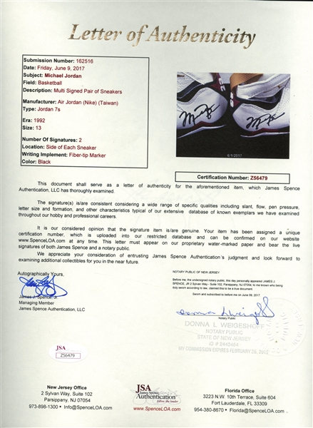

ORIGEN DE LAS ZAPATILLAS
Las zapatillas proceden la gran mayoría de la web oificial de venta del producto, ya sea la de Nike, la de Jordan o la
de Yeezy. Los productos al ser la gran mayoría de ediciones limitadas ya no se encuentran disponibles en dichas tiendas
pero yo tuve la fortuna de ser uno de los pocos en comprarla muy rápido cuando salió, gracias a programas con bots.
El resto de zapatillas que no han salido de sus páginas webs las he comprado por la famosa tienda StockX justo cuando
se lanzaron y los precio estaban mucho más reducidos que ahora.
CALIDAD DE LAS ZAPATILLAS
Las zapatillas están todas sin usar y en su caja y con sus accesorios de fábrica. Vienen con sus etiquetas originales, con
sus colores y materiales de fábrica también. Los materiales son de muy buena calidad al igual que todo lo de la zapatilla.
Su elevado precio es debido a su alta demanda y gran exclusividad de las zapatillas algunas son ediciones limitadas que solo
hay ciertas unidades y ya se han dejado de fabricar.
CERTIFICADO DE ORIGINALIDAD
Como comentaba antes las zapatillas son originales y por ello lo voy a demostrar con un certificado de originalidad, adjuntado
a continuación, :

El certificado de todas y cada una de las zapatillas se puede pedir y ver en la Tienda Física en el mostrador
de la entrada (firmado y con su código de identificación)
SEGURIDAD EN LA COMPRA
En cuento a la seguridad de la compra, tanto la web como la forma de pago está protegida por un servidor externo con una persona
conectada y pendiente las 24 horas. De todas formas se permite el pago con otros servicios como PayPal. Se permite el reembolso de
una compra (este tardará en devolverse 1 día lectivo, solo si NO ha recibido el pedido o este estaba defectuoso, en cuyo caso tendrá
que devolver de manera presencial las zapatillas en la tienda y recibirá el dinero allí mismo).
Si tiene alguna duda o problema con sus pedidos o con su seguridad no dude en llamar al: 945 67 12 11
O en su defecto en escribir un correo a: elrincondelassneaker@gerenciazapas.es